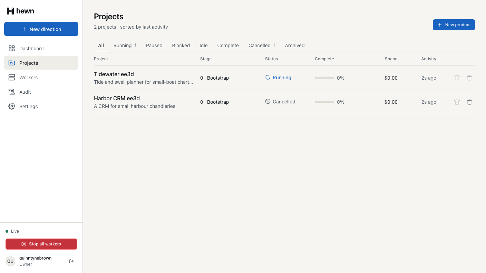
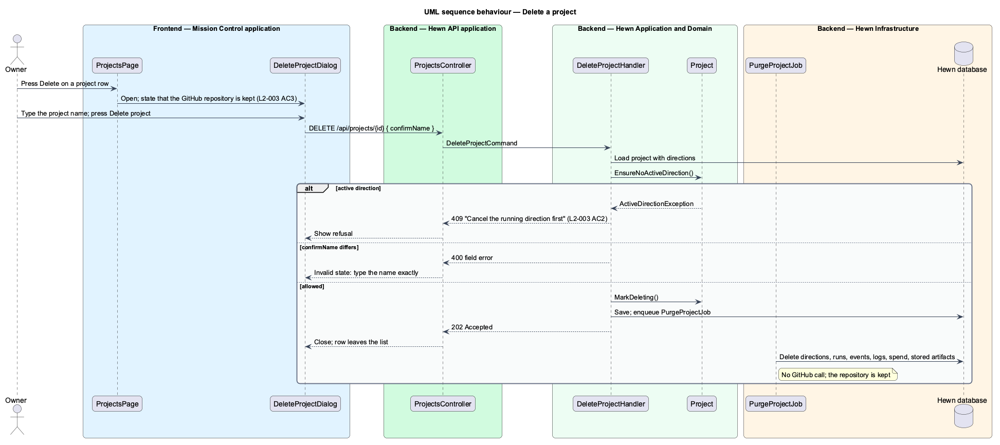
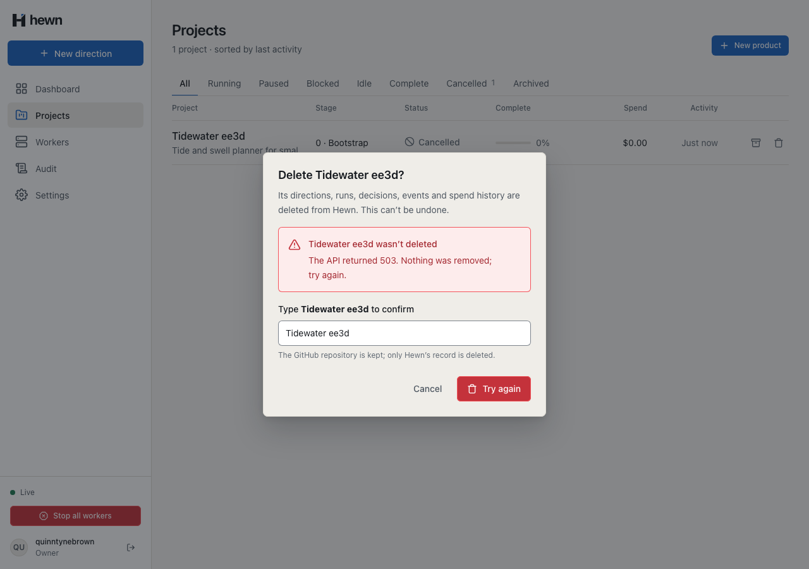
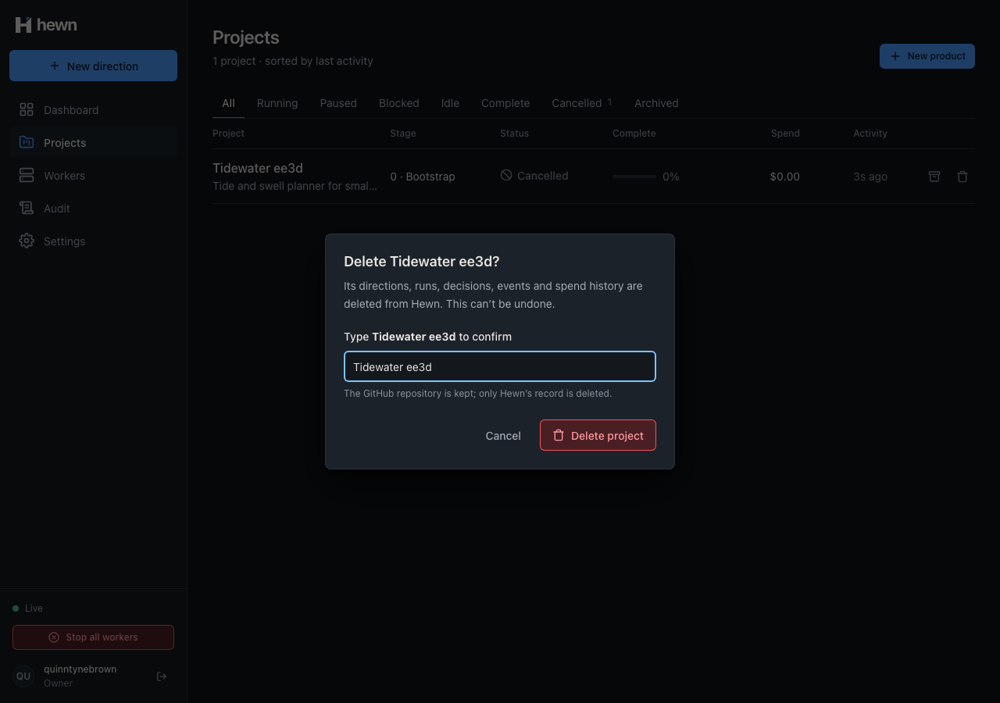
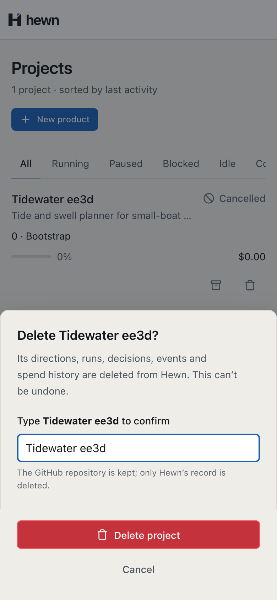

Hewn's records go; the repository stays.

var project = await db.Projects.Include(p => p.Directions)
.SingleOrDefaultAsync(p => p.Id == command.ProjectId, cancellationToken)
?? throw new NotFoundException();
if (project.HasActiveDirection)
{
throw new ConflictException("active_direction", "Cancel the running direction first");
}
if (!string.Equals(command.ConfirmName, project.Name, StringComparison.Ordinal))
{
throw new FieldValidationException(
[new FieldError("confirmName", $"Type {project.Name} exactly to delete it.", "The name doesn't match")],
"confirm_name");
}
db.Runs.RemoveRange(await db.Runs.Where(r => r.ProjectId == project.Id).ToListAsync(cancellationToken));
db.Events.RemoveRange(await db.Events.Where(e => e.ProjectId == project.Id).ToListAsync(cancellationToken));
db.SkillsUpdates.RemoveRange(await db.SkillsUpdates.Where(u => u.ProjectId == project.Id).ToListAsync(cancellationToken));
db.Directions.RemoveRange(project.Directions);
db.Projects.Remove(project);
await db.SaveChangesAsync(cancellationToken);
await publisher.ProjectDeletedAsync(project.Id, cancellationToken);
protected readonly typed = signal('');
protected readonly touched = signal(false);
protected readonly deleting = signal(false);
protected readonly failure = signal<string | null>(null);
protected readonly matches = computed(() => this.typed() === this.data.projectName);
/** Shown once the field is left with something other than the name. */
protected readonly error = computed(() =>
this.touched() ? confirmNameError(this.typed(), this.data.projectName) : null,
);

var response = await DeleteAsync(owner, projectId, "Harbor CRM");
Assert.Equal(HttpStatusCode.NoContent, response.StatusCode);
Assert.Equal(0, await RecordsAsync(projectId));
Assert.Equal(HttpStatusCode.NotFound, (await owner.GetAsync($"/api/projects/{projectId}")).StatusCode);
var rows = (await HewnClient.ReadJsonAsync(await owner.GetAsync("/api/projects"))).EnumerateArray();
Assert.DoesNotContain(rows, r => r.GetProperty("id").GetGuid() == projectId);
// Another project's records are untouched, and so is the repository (L2-003 AC3).
Assert.Equal(before, await RecordsAsync(otherId));
var repository = _factory.GitHub.Repository("northwind", "harbor-crm");
Assert.NotNull(repository);
Assert.Equal("# Harbor CRM", repository.Read("README.md"));
await expect(dialog.name).toHaveAttribute('aria-invalid', 'true');
await expect(dialog.confirm).toBeDisabled();
await dialog.name.fill(name);
await expect(dialog.error).toHaveCount(0);
await dialog.confirm.click();
await expect(projects.toast(`${name} deleted`)).toContainText('Its GitHub repository is kept.');
await expect(dialog.panel).toHaveCount(0);
await expect(row.root).toHaveCount(0);
await expect.poll(() => projectStatus(page, projectId)).toBe(404);
expect(await repositoryReadme(page, repository)).toBe(`# ${name}\n`);


